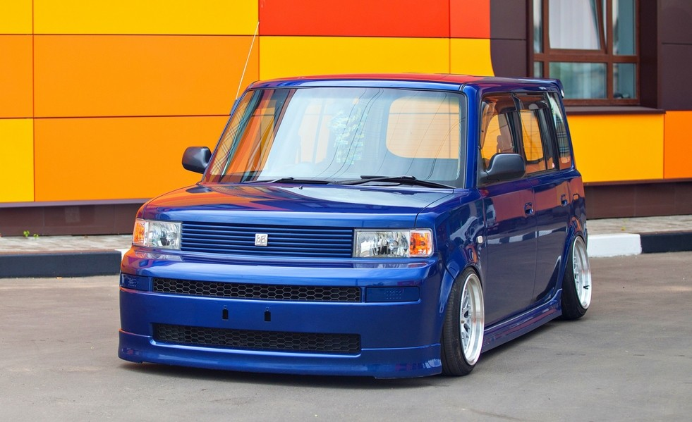

Внизу машина
Toyota bB — субкомпактвэн, выпускаемый японским автопроизводителем Toyota Motor Corporation с 2000 года. Под этим названием выпускается исключительно для японского рынка; в США с 2004 года аналогичный автомобиль производится под маркой Scion как Scion xB. Название модели bB («Би-би») происходит от английского словосочетания «black box» (чёрный ящик) для ассоциации с безграничностью ещё нераскрытых возможностей. Первое поколение автомобиля было создано на базе Toyota Vitz и Toyota Funcargo. Второе поколение Toyota bB появилось в конце 2005 года. Первое поколение комплектовалось четырёхцилиндровыми рядными двигателями объёмом 1,3 и 1,5 литров и мощностью 88, 105 (4wd) и 110 л. с. соответственно, оснащается только автоматической коробкой передач с переключателем на руле. Существуют версии с передним приводом, а также с постоянным полным приводом. Оснащается ABS, BAS, ESP, помощником подъёма/спуска с горы. Мелкосерийно выпускался кузов пикап на базе bB, который получил название Open Deck. Начало